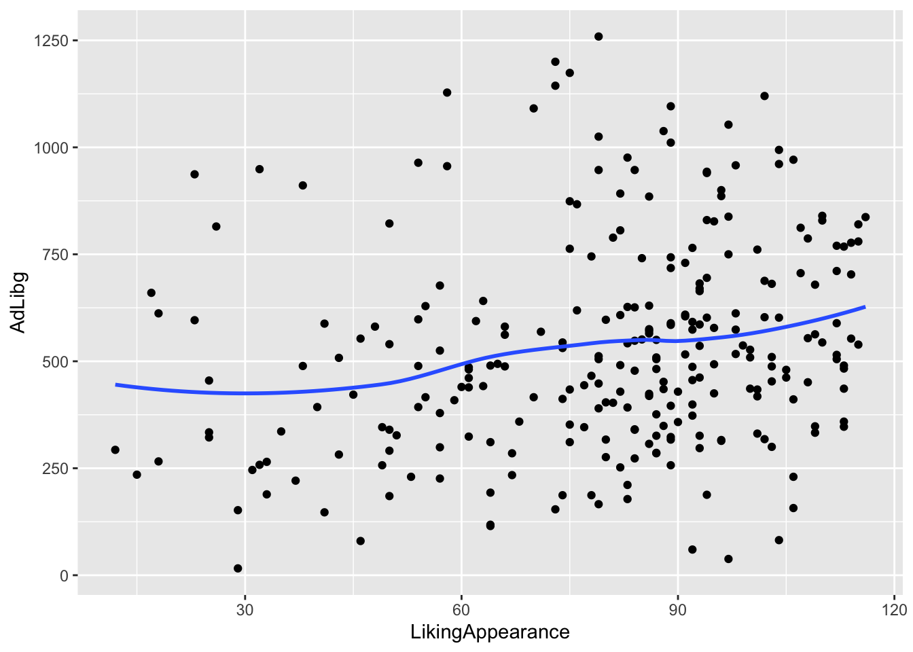

Chapter 6 Descriptive statistics
In this Chapter we will go through the main elements you need to
[MANGLER: bla bla bla introtekst…. inklu ]
We are using the combined buffet consumption and survey dataset. We have already made a merged version for you, so yo just need to load the data.
6.1 Loading data
First we need to load the data. If you do not have a saved data set (*.RData), please go to the chapters about “How to import data” and “How to save the data” for more info on import and data saving.
Use this if your data is in the same folder as your script:
load('iBuffetSurveyData.RData')Use this, if you need to browse for your *.RData file:
[MORTEN: skal vi stadig kalde RData filen dette her? Giver det mening?] Ja.
6.2 Distributions of count data
The table function is good in getting how many observations there are within a given vector, or combinations of several vectors.
Here used on the Survey answers.
table(Surveylong$answ) # across everything##
## A. Strongly disagree B. Disagree
## 0 2
## C. More or less disagree D. Neither agree nor disagree
## 6 7
## E. More or less agree F. Agree
## 21 32
## G. Strongly agree
## 52table(Surveylong$answ,Surveylong$question) # across question##
## I like the taste of pasta with legumes!
## A. Strongly disagree 0
## B. Disagree 1
## C. More or less disagree 3
## D. Neither agree nor disagree 2
## E. More or less agree 5
## F. Agree 8
## G. Strongly agree 11
##
## I like the taste of pasta with mushrooms!
## A. Strongly disagree 0
## B. Disagree 0
## C. More or less disagree 0
## D. Neither agree nor disagree 0
## E. More or less agree 4
## F. Agree 11
## G. Strongly agree 15
##
## Pasta with legumes is visually appealing to me.
## A. Strongly disagree 0
## B. Disagree 1
## C. More or less disagree 3
## D. Neither agree nor disagree 3
## E. More or less agree 6
## F. Agree 7
## G. Strongly agree 10
##
## Pasta with mushrooms is visually appealing to me.
## A. Strongly disagree 0
## B. Disagree 0
## C. More or less disagree 0
## D. Neither agree nor disagree 2
## E. More or less agree 6
## F. Agree 6
## G. Strongly agree 16You see that most of the answers are in agreement with question, and that there are no observations in the Strongly disagree category.
[MORTEN: kan vi lave en anden form for tabel her? Meld gerne ind hvad type data det kunne være?? for den man får ud giver ikke så meget mening set fra vores side. og så skal vi overveje om “tidyverse” er nice to know viden?]
[MÅSKE: The nice to know part:]
The tidyverse way
Lets do exactly the same just using tidyverse functions count(), group_by(), mutate(), and summarise().
Further, lets print the results in a nice looking table using kable() from the knitr package.
# tb <- Surveylong %>%
# count(question,answ,Day,name = "no_rows", .drop = F)
# kable(tb, caption = 'some caption')The numbers are absolute, but may be better represented by proportions.
tb <- Surveylong %>%
group_by(question,Day) %>%
dplyr::mutate(ntot = n()) %>%
group_by(question,answ,Day) %>%
dplyr::summarise(n = n(),
prc = 100*n / ntot[1])## `summarise()` has grouped output by 'question', 'answ'. You can override using
## the `.groups` argument.kable(tb, caption = 'some caption', digits = 1)| question | answ | Day | n | prc |
|---|---|---|---|---|
| I like the taste of pasta with legumes! | B. Disagree | 1 | 1 | 6.7 |
| I like the taste of pasta with legumes! | C. More or less disagree | 2 | 3 | 20.0 |
| I like the taste of pasta with legumes! | D. Neither agree nor disagree | 1 | 1 | 6.7 |
| I like the taste of pasta with legumes! | D. Neither agree nor disagree | 2 | 1 | 6.7 |
| I like the taste of pasta with legumes! | E. More or less agree | 1 | 4 | 26.7 |
| I like the taste of pasta with legumes! | E. More or less agree | 2 | 1 | 6.7 |
| I like the taste of pasta with legumes! | F. Agree | 1 | 3 | 20.0 |
| I like the taste of pasta with legumes! | F. Agree | 2 | 5 | 33.3 |
| I like the taste of pasta with legumes! | G. Strongly agree | 1 | 6 | 40.0 |
| I like the taste of pasta with legumes! | G. Strongly agree | 2 | 5 | 33.3 |
| I like the taste of pasta with mushrooms! | E. More or less agree | 1 | 2 | 13.3 |
| I like the taste of pasta with mushrooms! | E. More or less agree | 2 | 2 | 13.3 |
| I like the taste of pasta with mushrooms! | F. Agree | 1 | 5 | 33.3 |
| I like the taste of pasta with mushrooms! | F. Agree | 2 | 6 | 40.0 |
| I like the taste of pasta with mushrooms! | G. Strongly agree | 1 | 8 | 53.3 |
| I like the taste of pasta with mushrooms! | G. Strongly agree | 2 | 7 | 46.7 |
| Pasta with legumes is visually appealing to me. | B. Disagree | 1 | 1 | 6.7 |
| Pasta with legumes is visually appealing to me. | C. More or less disagree | 1 | 1 | 6.7 |
| Pasta with legumes is visually appealing to me. | C. More or less disagree | 2 | 2 | 13.3 |
| Pasta with legumes is visually appealing to me. | D. Neither agree nor disagree | 1 | 2 | 13.3 |
| Pasta with legumes is visually appealing to me. | D. Neither agree nor disagree | 2 | 1 | 6.7 |
| Pasta with legumes is visually appealing to me. | E. More or less agree | 1 | 1 | 6.7 |
| Pasta with legumes is visually appealing to me. | E. More or less agree | 2 | 5 | 33.3 |
| Pasta with legumes is visually appealing to me. | F. Agree | 1 | 5 | 33.3 |
| Pasta with legumes is visually appealing to me. | F. Agree | 2 | 2 | 13.3 |
| Pasta with legumes is visually appealing to me. | G. Strongly agree | 1 | 5 | 33.3 |
| Pasta with legumes is visually appealing to me. | G. Strongly agree | 2 | 5 | 33.3 |
| Pasta with mushrooms is visually appealing to me. | D. Neither agree nor disagree | 1 | 1 | 6.7 |
| Pasta with mushrooms is visually appealing to me. | D. Neither agree nor disagree | 2 | 1 | 6.7 |
| Pasta with mushrooms is visually appealing to me. | E. More or less agree | 1 | 3 | 20.0 |
| Pasta with mushrooms is visually appealing to me. | E. More or less agree | 2 | 3 | 20.0 |
| Pasta with mushrooms is visually appealing to me. | F. Agree | 2 | 6 | 40.0 |
| Pasta with mushrooms is visually appealing to me. | G. Strongly agree | 1 | 11 | 73.3 |
| Pasta with mushrooms is visually appealing to me. | G. Strongly agree | 2 | 5 | 33.3 |
… and a plot of it
tb %>%
ggplot(data = ., aes(answ,prc, fill = factor(Day))) +
geom_bar(stat = 'identity', position = position_dodge()) +
facet_wrap(~question) +
theme(axis.text.x = element_text(angle = 45,hjust = 1),
legend.position = 'top')
6.2.1 Descriptives for a continouos variable
[MORTEN: skal denne også ændres til noget smartere? datasættet er opsæt anderledes end vi normalt ville gøre det, og jeg tænker mere og mere på, om det er hensigtsmæssigt? Hjææælp…]
Here just across the entire sample set.
mean(Buffet_survey$Consumption)## [1] 138median(Buffet_survey$Consumption)## [1] 126sd(Buffet_survey$Consumption)## [1] 85.45472IQR(Buffet_survey$Consumption)## [1] 112.5summary(Buffet_survey$Consumption)## Min. 1st Qu. Median Mean 3rd Qu. Max.
## 0.0 74.0 126.0 138.0 186.5 378.0This is a very high level representation, and we usually want to compare means (or other metrics) between different groups.
We use the consumption and split it according to day and pasta-type.
tb2 <- Buffet_survey %>%
group_by(StationName, Day) %>%
dplyr::summarise(nobs = n(),
mean = mean(Consumption),
median = median(Consumption),
sd = sd(Consumption),
iqr = IQR(Consumption),
q25 = quantile(Consumption,0.25),
q75 = quantile(Consumption,0.75))## `summarise()` has grouped output by 'StationName'. You can override using the
## `.groups` argument.kable(tb2, digits = 1, caption = 'some relevant caption')| StationName | Day | nobs | mean | median | sd | iqr | q25 | q75 |
|---|---|---|---|---|---|---|---|---|
| Pasta with legumes | 1 | 15 | 132.3 | 130 | 81.2 | 101 | 71 | 172 |
| Pasta with legumes | 2 | 15 | 155.7 | 138 | 103.7 | 139 | 71 | 210 |
| Pasta with mushroom | 1 | 15 | 135.1 | 92 | 88.7 | 99 | 76 | 175 |
| Pasta with mushroom | 2 | 15 | 128.9 | 124 | 71.3 | 85 | 86 | 171 |